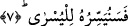

bir kısmı güzel, faydalı, hayırlı ve sâlihtir. Bazısı ise çirkin, zararlı, kötü ve fâsiddir.
Bir hadîste şöyle buyrulmuştur: “İnsanlar sabahtan (pazara) çıkar. Bir kısmı nefsini
satın alır ve azad eder, bir kısmı satar ve helâk eder.” [118]
Kâşânî der ki: Sizin çalışmanız ve çabanız farklı farklı ve çeşit çeşittir. Çünkü
bazılarınıza nuriyyet galip geldiği için ruh tarafına ve hayra yönelmeye cezbolunur.
Bazılarınıza ise zulmet ağır bastığı için meyli nefis tarafına ve şerre dalmayadır.
Bazıları demiştir ki: Bu âyetin bâtın mânâsı, kişinin kendi çabasını tekvîn/yaratma
açısından Hakk’ın kendisine bir taksimi olarak görmesidir. Çünkü Allah Teâlâ
“Onların geçimliklerini aralarında biz paylaştırdık.” (ez-Zuhruf, 43/32) buyurmuştur.
Çalışıp çabalamanın da bir takım mertebeleri vardır. Tıpkı dünya sultanlarına yakın
olan insanların nedimlik, sultanla birlikte oturmak ve sır arkadaşları şeklinde
mertebeleri olduğu gibi.
Nefislerle olan çaba, dereceler elde etme çabasıdır. Akılla yapılan çaba üstünlükler
elde etmek içindir. Kalp ile yapılan çaba ise müşâhede elde etmek uğrunadır. Ruhlarla
yapılan çaba yakınlık elde etme talebiyledir: Sırlarla yapılan çalışma zât nurlarında fânî
olmak ve sıfatların nurlarında bâkî kalmak içindir. Yine irâde ile, muhabbet, şevk, aşk,
mârifet ve bunlardan başkalarıyla yapılan çaba ve işler vardır.
5. Artık kim verir ve sakınırsa,
“Artık kim” malı üzerindeki hakları “verir ve” Allah’ın yasaklamış olduğu içinde
başa kakmak ve eziyet dâhil, bütün haramları yapmaz ve bunlardan “sakınırsa”
Bu ve sonraki âyetlerde önceki âyette geçen farklı farklı işlerin tafsilatına geçilmekte
ve onların hükümleri açıklanmaktadır.
6. En güzeli de tasdik ederse,
En güzel haslet olan îmanı veya en güzel kelime olan kelime-i tevhîdi ya da en güzel
din olan İslam’ı yahut en güzel sevap olan Cenneti tasdik ederse,
7. Biz de onu en kolaya hazırlarız (onda başarılı kılarız).